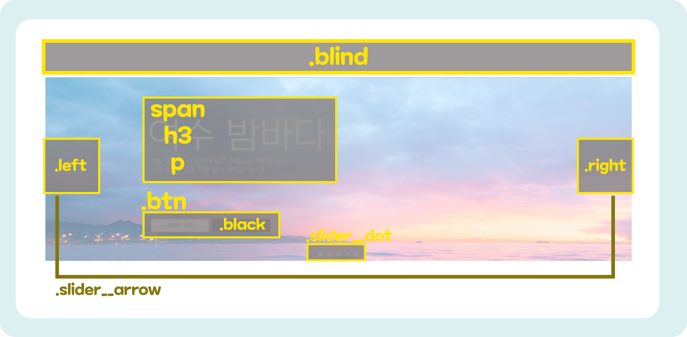

사이트 만들기 _ 슬라이드 유형01
슬라이드 유형에 대해 알아보겠습니다. 사실 사이트만들기는 여태까지 했던 내용들이 계속해서 나오는 부분이라 이렇다할 내용이 없네요...? 그래도 같이 보시죠
■ 그림으로 미리보기🎨
■ 핵심내용✍
.ir {
display: block;
overflow: hidden;
font-size: 0;
line-height: 0;
text-indent: -9999px;
}
웹 표준 준수를 위해 .dot a 에 ir 효과를 부여합니다. 이외도 .slider__arrow a 에도 똑같이 부여합니다.
CSS 속성
/* fonts */
@import url('https://webfontworld.github.io/NexonLv1Gothic/NexonLv1Gothic.css');
.nexon {
font-family: "NexonLv1Gothic";
font-weight: 400;
}
/* 리셋 */
*{
margin: 0;
padding: 0;
}
a{
text-decoration: none;
color: #000;
}
img {
width: 100%;
}
h1, h2, h3, h4, h5, h6 {
font-weight: normal;
}
li{
list-style: none;
}
/* common */
.container {
width: 1160px;
padding: 0 20px;
margin: 0 auto;
min-width: 1160px;
}
.section {
padding: 120px 0;
}
.section > h2 {
font-size: 50px;
line-height: 1;
text-align: center;
margin-bottom: 20px;
}
.section > p {
font-size: 22px;
font-weight: 300;
color: #666;
text-align: center;
margin-bottom: 70px;
}
.slider__inner {
margin-top: 70px;
}
.slider {
position: relative;
}
.slider__img {
background: url(../slideType/img/SLIDER-TYPE01.jpg) no-repeat center / cover;
}
.slider__img .desc {
width: 1160px;
margin: 0 auto;
padding: 100px 20px;
}
.slider__img .desc span {
font-size: 16px;
background-color: #fff;
padding: 1px 14px 0 14px;
border-radius: 30px;
text-transform: uppercase;
margin-bottom: 10px;
display: inline-block;
}
.slider__img .desc h3 {
font-size: 110px;
font-weight: 300;
line-height: 1;
color: #fff;
text-transform: uppercase;
margin-bottom: 16px;
margin-left: -8px;
}
.slider__img .desc p {
font-size: 20px;
font-weight: 300;
color: #fff;
line-height: 1.35;
margin-bottom: 130px;
}
.slider__img .desc .btn a {
font-size: 16px;
background-color: #fff;
padding: 11px 50px;
display: inline-block;
}
.slider__img .desc .btn a.black {
background: #000;
color: #fff;
}
.slider__arrow a {
position: absolute;
top: 50%;
width: 30px;
height: 56px;
transform: translateY(-50%);
background-image: url(../slideType/img/slider_icon.svg);
}
.slider__arrow a.left {
left: 20px;
}
.slider__arrow a.right {
right: 20px;
background-position: -50px 0;
}
.slider__dot {
position: absolute;
left: 50%;
transform: translateX(-50%);
bottom: 25px;
}
.slider__dot a {
display: inline-block;
width: 16px;
height: 16px;
background-image: url(../slideType/img/slider_icon.svg);
background-position: -20px -70px;
}
.slider__dot a.active {
background-position: 0px -70px;
}
.slider__dot a.play {
background-position: -40px -70px;
}
.slider__dot a.stop {
background-position: -60px -70px;
}
/* 블라인드 효과 */
.blind{
position: absolute;
clip: rect(0 0 0 0);
width: 1px;
height: 1px;
margin: -1px;
overflow: hidden;
}
/* 이미지 대체효과(ir효과) */
.ir {
display: block;
overflow: hidden;
font-size: 0;
line-height: 0;
text-indent: -9999px;
}
HTML 속성
<section id="sliderType" class="slider__wrap">
<h2 class="blind">슬라이드영역</h2>
<div class="slider__inner">
<div class="slider">
<div class="slider__img">
<div class="desc">
<span>버스커버스커</span>
<h3>여수 밤바다</h3>
<p>
여수 밤바다 이 조명에 담긴 아름다운 얘기가 있어<br />
네게 들려주고파 전활 걸어 뭐하고 있냐고
</p>
<div class="btn">
<a href="#">자세히 보기</a>
<a href="#" class="black">사이트 보기</a>
</div>
</div>
</div>
<div class="slider__arrow">
<a href="#" class="left"><span class="ir">이전 이미지</span></a>
<a href="#" class="right"><span class="ir">다음 이미지</span></a>
</div>
<div class="slider__dot">
<a href="#" class="dot active"><span class="ir">1</span></a>
<a href="#" class="dot"><span class="ir">2</span></a>
<a href="#" class="dot"><span class="ir">3</span></a>
<a href="#" class="play"><span class="ir">플레이</span></a>
<a href="#" class="stop"><span class="ir">정지</span></a>
</div>
</div>
</div>
</section>
<!--//sliderType-->